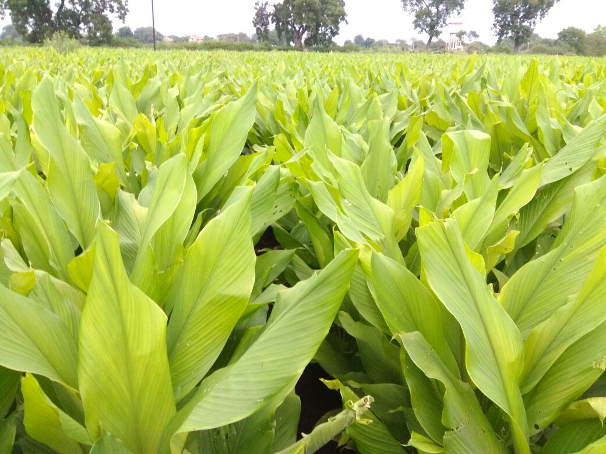

हळद विषयी माहिती

हळद हे एक मसाले वर्गातील प्रमुख नगदी पीक म्हणून ओळखले जाते. भारतामध्ये या पिकाखालील क्षेत्र १,२५,८०० हेक्टर असून
उत्पादन ५,५०,१८५ मे. टन इतके आहे. जगातील उत्पादनापैकी जवळजवळ ८०टक्के उत्पादन भारतामध्ये होते,
परंतु त्यापैकी १५ ते २० टक्के फक्त हळद निर्यात होते. उत्पादनाचा विचार केला असता प्रथम क्रमांक आंध्रप्रदेश असून
त्यानंतर ओरिसा, तामिळनाडू आसाम, कर्नाटक आणि महाराष्ट्र असा क्रम लागतो. महाराष्ट्रामध्ये या पिकाखाली ८,५०० हेक्टर
क्षेत्र असून उत्पादन ४२,५०० मेट्रिक टन इतके होते.
हळदीचे औषधी गुणधर्म
1. आयुर्वेद शास्त्रानुसार हळद पोटदुखी निवारक, रक्तशुद्धीकारक, बलवर्धक, कृमीनाशक आम्लपित्तहारक, भूक उद्दीपीत
करणारी आहे.
2. हळदीमुळे त्वचेचा रंग उजळतो तसेच ती रक्तशुद्धीसाठी गुणकारी आहे.
3. पायावर सूज आल्यास हळद, गुळ व गोमुत्र गरम करून प्यावे.
4. डोळ्याचे विकारावर हळकुंड तुरीच्या डाळीत शिजवून डोळ्यात अंजन करावे.
5. डाळीच्या पिठामध्ये थोडी हळद, थोडा पिसलेला कापूर व ४ ते ५ थेंब मोहरीचे तेल टाकून स्नान केल्यास त्वचारोग, खाज
थांबून पूर्ण अंगकांती सुधारते.
महत्त्व
धार्मिक कार्यक्रमात तसेच हळदीपासूनचे कुंकू, हळद, लग्नकार्य, पूजा, भंडारा, सौंदर्य प्रसाधने व अनेक पोषक घटक तयार
करतात.
हवामान
हळद पिकास उष्ण व दमट हवामान चांगले मानवते. मध्यम पाऊस व चांगल्या स्वच्छ प्रकाशात या पिकाची वाढ उत्तम होते.
पाण्याचा ताण व जास्त पाऊससमान हे पीक काही वेळ सहज सहन करू शकते, परंतु जास्त दिवस पिकात पाणी साचून राहणे हानिकारक
आहे.
तसेच कडक हिवाळा या पिकास मानवत नाही. सरासरी ५०० ते ७५० मिलीमीटर असणार्या निमशुष्क वातावरणात हळदीचे पीक
चांगले येते.थंडीमुळे हळदीची पानेवाढ काही अंशी थांबते व जमिनीतील कंदांची (फण्यांची) वाढ होते. कोरडे व थंड हवामान
कंद पोषणास अनुकूल असते.
जमीन
हळद पिकाची यशस्वी किंबहुना फायदेशीर लागवड ही प्रामुख्याने जमिनीच्या निवडीवरच अवलंबून असते. या पिकास मध्यम
प्रतीची तसेच चांगला निचरा होणारी जमीन आवश्यक असते. भारी काळ्या चिकन, क्षारयुक्त जमिनीत हळदीचे पीक चांगले येत
नाही म्हणून हळद लागवडीसाठी शक्यतो अशा जमिनीची निवड करू नये.
सुधारित जाती
१) फुले स्वरूप
२) सेलम :
३) कृष्णा (कडाप्पा ) :
४) राजापुरी :
५) खाण्याची हळद (Curcuma Longa ) :
६) कस्तुरी किंवा रानहळद ( Cucuma Caesia) :
७) इस्ट इंडियन अॅरोरूट (East Indian Aroroot) :
८) आंबेहळद (Curcuma Amada) :
९) काळी हळद (Curcuma Caesia) :
१०) कचोर (Curcuma Zedoria) :
पूर्व मशागत
हळद लागवडीमध्ये पूर्वमशागतीच्या कामामाध्ये नांगरट करणे, ढेकळे फोडणे, शेताच्या कडा कुदळीने किंवा टिकावाणे खणून ही
सर्व कामे पूर्वनियोजन करून त्याप्रमाणे करून घेणे आवश्यक आहे.
पहिल्या नंगारटीनंतर शेतात मोठी ढेकळे दिसत असल्यास तव्याचा कुळव मारून घ्यावा. त्यानंतर १५ ते २० दिवसांनी परत
संपूर्ण ढेकळे फोडून घ्यावीत आणि ३५ ते ४० टन चांगले कुजलेले शेणखत शेतात पसरून घ्यावे.
लागवडीचा हंगाम आणि लागवड
हळदीची लागवड साधारणपणे एप्रिल महिन्याच्या मध्यापासून जून महिन्याच्या पहिल्या आठवड्यापर्यंत करावी. ठिकठिकाणच्या
स्थानिक प्राप्त परिस्थितीनुसार लागवडीचा कालावधी मागेपुढे होतो. लागवडीसाठी वापरले जाणार्या बियाणांची सुप्तावस्थ
संपलेली असावी. रुंद वरंबा पद्धतीने ३० x ३० सें.मी. अंतरावरती गड्डे लावून घ्यावेत. लागवडीच्या वेळी गड्डे पुर्ण
झाकले जातील याची दक्षता घ्यावी.
बेणे
एकरी १००० किलो बेणे लागते. लागवड मातृकंदापासून करतात. या कंदापासून तयार केलेल्या ३० दिवसाच्या वयाच्या
रोपापासूनही लागवड करतात. कन्याकंदही लागवडीसाठी वापरतात.
बीजप्रक्रिया
१ लि. जर्मिनेटर १०० लि. पाण्यामध्ये घेऊन त्यामध्ये १०० किलो बेणे १० मिनिटे भिजवून नंतर ते सुकवून लावावे. हे
द्रावण २ ते ३ वेळा वापरता येते. त्यामुळे कंद (बेणे) लवकर, एकसारखे उगवून मर होत नाही.
आंतरमशागत (भरणी करणे)
हळदीच्या लागवडीनंतर २.५ ते ३ महिन्यांनी भरणी करणे अत्यंत आवश्यक आहे. सरीमधील माती किंवा लागण केलेल्या दोन्ही
गड्ड्यांच्यामधील मोकळ्या जागेमधील माती १.५ ते २ इंच शिपीच्या कुदळीने खणून दोन्ही बाजूंच्या गड्ड्यांना लावणे
म्हणजे भरणी करणे होय.
माती लावताना संपूर्ण कंद झाकला जाईल अशा पद्धतीने माती लावावी. भरणी केल्यानंतर पिकास हलकेसे
पाणी द्यावे. भरणी केल्यामुळे नवीन येणारे हळकुंड झाकले जातात व त्यांची चांगली वाढ होते. मात्र याउलट भरणी न
केल्यास जमिनीच्या बाहेर आलेल्या हळकुंडाची वाढ होत नाही. थोडीफार झाली तरी ती निकृष्ट दर्जाची होते आणि
उत्पादनामध्ये जवळजवळ १० ते १५ टक्क्यांनी घट येते.
पाणी व्यवस्थापन
हळदीची लागवड एप्रिल -मे महिन्यामध्ये होत असल्याने सुरुवातीच्या काळात पावसाची सुरुवात होईपर्यंत पाण्याची अत्यंत
आवश्यकता असते. कारण दरम्यानच्या काळात मुळांकडून स्थिरता प्राप्त होणे हा महत्त्वाचा कालावधी असतो, म्हणून
लागवडीनंतर आंबवणीचे पाणी लगेच ४ ते ६ दिवसांच्या अंतराने द्यावे.
जमिनीच्या प्रतिनुसार हा कालावधी कमी -जास्त
ठेवावा. पावसाला सुरू झाल्यानंतर पावसाचेह पाणी जमिनीमध्ये साठून राहणार नाही, याची दक्षता घ्यावी. पावसाळ्यानंतर
हिवाळयामध्ये पाण्याच्या २ पाळीमधील अंतर १२ ते १५ दिवस ठेवावे. मात्र पीक काढणीच्या १५ दिवस अगोदर अजिबात पाणी देऊ
नये.
खते
हळद पिकासाठी खतामधील सर्व घटकांची कमी- अधिक प्रमाणात गरज असते. मात्र हळद पिकासाठी रासायानिक खते वापरलेल्या
हळदीच्या कंदावरती अनिष्ट परिणाम होतो.
असा अनुभव शेतकर्यांचा आहे. तेव्हा हळदीला शक्य तेवढ्या प्रमाणात सेंद्रिय
खतांचा वापर करावा. यामध्ये पुर्ण कुजलेले शेणखत एकरी १० टन (२० बैलगाड्या) आणि कल्पतरू सेंद्रिय खत ७५ ते १०० एकरी
किलो दिन हप्त्यातून (लागवडीवेळी अर्धी मात्र आणि भरणीच्यावेळी अर्धी मात्रा याप्रमाणे) द्यावे. त्याचवेळी हेक्टरी
२०० ते ३०० किलो करंजी किंवा निंबोळी पेंड द्यावी आणि भरणी करून द्यावी. या पिकास भरणीनंतर कोणतीही खते देऊ नयेत.
आंतरपिकांची लागवड
मुख्य पिकाशी स्पर्धा न करता हळद पिकाच्या उत्पादनामध्ये वाढ करणार्या आंतरपिकांची निवड करणे अत्यंत महत्त्वाचे
आहे. ही पिके हळद पिकापेक्षा उंचीने कमी तसे च पसार्याने कमी जागा व्यापणारी असावीत. हळद पिकाची लागवड केल्यापासून
३ ते ३.५ महिन्यांनी फुटवे येउन कंद पोसण्यास सुरुवात होते.
त्यासाठी हळकुंड येण्याच्या कालावधीपूर्वी आंतरपिकाची
काढणी होणे फायदेशीर ठरते, महणून हळद पिकामध्ये श्रावणघेवडा, मिरची, कोथिंबीर या पिकांची लागवड करावी. मका हे पीक
हळदीमध्ये घेऊ नये. कारण मक्यामुळे हळदीच्या उत्पादनामध्ये १५ ते २० टक्के घट येते.
फवारणी
१) पहिली फवारणी : (जूनमध्ये ) : हळद १ महिन्याची असताना जर्मिनेटर २५० मिली.अधिक थ्राईवर २५० मिली. अधिक
क्रॉंपशाईनर २५० मिली.अधिक प्रोटेक्टंट १०० ग्रॅम अधिक प्रिझम २५० मिली. अधिक हार्मोनी १०० मिली अधिक १०० लि.पाणी.
२) दुसरी फवारणी : (ऑगस्टमध्ये) : जर्मिनेटर ५०० मिली.अधिक थ्राईवर ५०० मिली. अधिक क्रॉंपशाईनर ५०० मिली.अधिक राईपनर
२५० मिली. अधिक प्रोटेक्टंट २५० ग्रॅम अधिक प्रिझम ५०० मिली.अधिक न्युट्राटोन २५० मिली. अधिक हार्मोनी २५० मिली अधिक
१५० लि.पाणी.
३) तिसरी फवारणी : (सप्टेंबरमध्ये ) : थ्राईवर ५०० मिली. अधिक क्रॉंपशाईनर ५०० मिली.अधिक राईपनर २५० मिली. अधिक
प्रोटेक्टंट २५० ग्रॅम अधिक प्रिझम ५०० मिली.अधिक न्युट्राटोन २५० मिली. अधिक हार्मोनी २५० मिली अधिक १५० लि.पाणी.
४) चौथी फवारणी : (ऑक्टोबरमध्ये ) : थ्राईवर १ लि. अधिक क्रॉंपशाईनर १ लि. अधिक राईपनर ७५० मिली. अधिक न्युट्राटोन
७५० मिली.अधिक हार्मोनी ३५० ते ५०० मिली अधिक २०० ते २५० लि. पाणी.
सप्तामृत, हार्मोनी फवारण्याचे फायदे : पहिल्या फवारणीमुळे उगवून आलेल्या कोंबाची मर होत नाही. तसेच रोगापासून
संरक्षण होऊन वाढ चालू होते. दुसर्या व तिसर्या फवारणीमुळे हळदीचा फुटवा होऊन पाने रुंद, चमकदार आणि तजेलदार तयार
होतात. तसेच कंद वाढीस लागून हळद लागत (सडत) नाही. तिसर्या फवारणीमुळे कंद पोसून फण्यांची संख्या, आकारात वाढ होऊन
एकंदरीत उत्पादन व दर्जात वाढ होते.
जर्मिनेटर, प्रिझममुळे हळदीची वाढ झपाट्याने होऊन मर किंवा हळद लागणे यावर प्रतिबंध होतो. थ्राईवर, क्रॉंपशाईनर,
हार्मोनीमुळे पानांवर करपा, ठिपके येत नाहीत, तसेच वेडीवाकडी पाने सरळ व टवटवीत होतात. धोधो पाऊस, धुक्याचा त्रास
होत नाही. राईपनर, न्युट्राटोनमुळे हळदीच्या फणींची संख्या, आकार, वजन व गर वाढून गर्द रंगाची दर्जेदार हळद उत्पादन
घेता येते.
काढणी : हळद लागवडीमध्ये अतिशय महत्त्वाची आणि शेतकरी बंधूना खर्या अर्थाने क्लिष्ट वाटणारी बाब म्हणजे काढणी होय.
चांगल्या उत्पादन देणार्या हळद पिकाची काढणी ८.५ ते ९ महिन्यांनी करावी. पक्क झालेल्या हळद पिकाच्या झाडाला पाला
जमिनीच्या मगदूरानुसार पिकाचा कालावधी पूर्ण झाल्यानंतर ६० ते ८० टक्केच वाळला जातो. अशावेळी झाडाचा पाल जमिनीलगत
धारदार विळ्याने कापून घ्यावा.
त्यानंतर जमीन थोडीशी भेगाळून घ्यावी आणि कुदळीच्या सहाय्याने हळद काढणी करावी. काढणी
करताना जेठे गड्डे, हळकुंडे, सोर गड्डा अशी प्रतवारी करावी. काढणीनंतर हळकुंडे तसेच बियाणे त्वरीत सावलीच्या ठिकाणी
हलवावे.
हळद शिजवण वाळविणे व पॉलिश करणे
हळद शिजवताना सच्छिद्र वापर करून हळद शिजविणे फायदेशीर ठरते. या पद्धतीमध्ये डिझेलच्या बॅरलपासून बनविलेले १.५ फूट
उंचीचे व २ फुट व्यासाचे ४ते ५ सच्छिद्र ड्रम ५ फुट व्यासाच्या मोठ्या कढईमध्ये पाणी ओतून पाण्याची आतील पातळी
ड्रमच्या उंचीच्या वर ४ ते ५ से.मी. इतकी ठेवली जाते.
नंतर ड्रम जाड गोणपाटाने झाकून घेतले जातात. या पद्धतीने हळद
फक्त २५ ते ३० मिनिटात चांगल्या प्रकारे शिजते. त्यावेळी पाण्याचे तापमान ९० डी. ते १०० डी. सेंटीग्रेट असते. हळद
शिजल्यानंतर चुलवानामध्ये इंधन टाकण्याने प्रमाण कमी केले जाते.
त्यामुळे आपोआप पाण्याचे तापमान कमी होते. शिजलेल्या
हळदीचे ड्रम लांब बांबूच्या सहाय्याने २ कड्यामध्ये असकून २ व्यक्तिंकडून सहजासहजी उचलून वाळविण्यासाठी खळ्यामध्ये
अथवा कठीण जागेवर टाकावे. असे रिकामे झालेले ड्रम पुन्हा कच्च्या हळदीने भरून काहीलीतील गरम पाण्यात ठेवतात.
पाण्याची पातळी पुन्हा ठेवलेल्या ड्रमवर ४ ते ५ सेंमी राहील इतकी ठेवली जाते. ठेवलेले ड्रम वरीलप्रमाणे गोणपाटात
झाकतात व परत इंधन टाकून त्याच पद्धतीने हळद शिजविली जाते.
वरील पद्धीतमध्ये एका ड्रममध्ये सुमारे ५५ ते ६० किलो याप्रमाणे एका वेळी जवळ जवळ २५० ते ३०० किलो हळद शिजविली जाते.
प्रत्येक वेळी जुन्या पद्धतीप्रमाणे गरम पाणी काढून टाकणे आणि पुन्हा नवीन पाणी टाकणे ही प्रक्रिया करावी लागत नाही.
दुसरे हळद भरलेले ड्रम काहिलीत ठेवलेले असता पाण्याचे तापमान ८३ डी. ते ८४ डी. सेंटीग्रेडपर्यंत खाली येते. त्यामुळे
पहिले ड्रम काढल्यानंतर दुसर्या घेतलेल्या ड्रममधील हळद शिजविण्यासाठी लागणारे इंधन हे तापमान ८४ ते १०० डी.
सेंटीग्रेटपर्यंत वाढविण्यासाठी लागेल इतकेच असते.
त्यामुळे इंधनाची बचत होते. तसेच सर्व हळद एकसारखी शिजली जाते.
शिजताना पाण्यातील माती हळकुंडावर न बसता काहिलीत जमा होते. त्यामुळे इंधनाची बचत होते. तसेच सर्व हळद एकसारखी शिजली
जाते.
त्यामुळे मातीविरहीत स्वच्छ धुतलेली हळद मिळते. अशा हळदीस वाळविल्यानंतर पॉलिश केल्यास आकर्षक रंग प्राप्त
होतो आणि उताराही चांगला मिळतो. अशा हळदीची गुणवत्ता चांगली असल्याने बाजारभावही चांगला मिळतो. अशा या वेळ, इंधन व
मजुरी यांची बचत करणार्या व किफायतशीर नफा मिळवून देणार्या सुधारीत तंत्राचा पारंपारिक पद्धतीत थोडाफार खर्च करून
अवलंब नक्कीच फायदा होईल.
हळद वाळविणे
हळद शिजविल्यानंतर सुरुवातीचे ४ ते ५ दिवस ३ ते ४ इंचापेक्षा मोठा थर देऊ नये. मोठा थर दिल्यास हळकुंड वाळण्यास उशीर
लागतो. त्याचप्रमाणे हळकुंड काळी पडतात.
हळकुंडे साधारणपणे ८ ते १० दिवस उन्हात चांगली वाळवावी, वाळलेली हळद
पाण्याने भिजाणार नाही याची दक्षता घ्यावी. हळद शक्यतो तोडपत्रीवरती किंवा कठीण जागेवरती वाळवावी, त्यामुळे
मजुरीवरती होणारा खर्च कमी होईल.
उत्पादन
हळदीचे उत्पादन हे वापरलेली जात, निरोगी बियाणे, दिलेली खते, जमिनीचा प्रकार यावर अवलंबून असते. सर्वसाधारणपणे ओल्या
हळदीचे प्रति हेक्टरी २५० ते ३५० क्विंटल (अधिक २५ ते ३० क्विंटल गड्डे ) इतके उत्पादन मिळते. तसेच या ओल्या
हळदीपासून ५८ ते ७५ क्विंटल वाळलेली हळद मिळते.